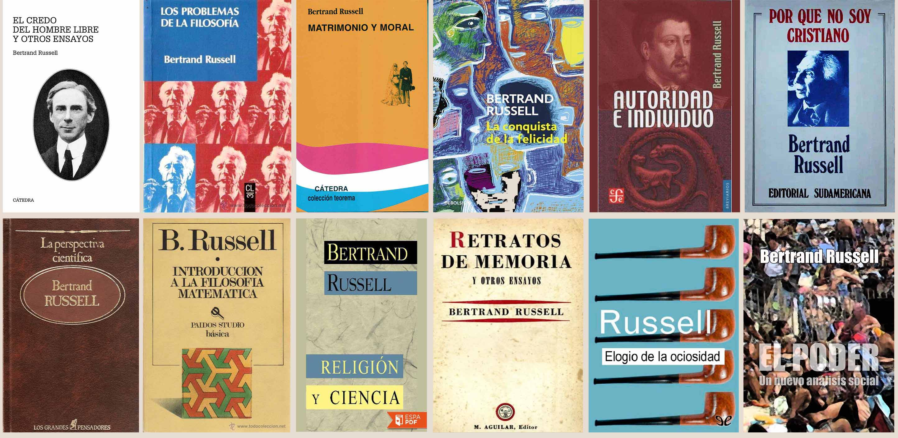

Bertrand Arthur William Russell (Trellech, 18 de mayo de 1872-Penrhyndeudraeth, 2 de febrero de 1970) fue un matemático, lógico, filósofo, y escritor, conocido por su influencia en la filosofía analítica. Con A. N. Whitehead fue coautor de su primera obra
Principia Mathematica. Su trabajo ha tenido una influencia considerable en las matemáticas, lógica, teoría de conjuntos, filosofía del lenguaje, epistemología, metafísica, ética y política. Russell fue un destacado activista social pacifista contra la guerra.
Russell quedó huérfano a la edad de seis años. Con su hermano Frank se mudó a Pembroke Lodge, con su abuelo lord John y su abuela lady Russell, quien sería la responsable de educarlo. Pese a que sus padres habían sido liberales radicales, su abuela era de ideas morales muy estrictas, convirtiéndose Russell en un niño tímido, retraído y solitario. El ambiente represivo y conservador de Pembroke Lodge le produjo numerosos conflictos a Russell durante su adolescencia. No fue al colegio, sino que fue educado por diversos tutores y preceptores, de los que aprendió, entre otras cosas, a dominar perfectamente el francés y el alemán.
En 1890, Russell ingresó al Trinity College de Cambridge para estudiar matemáticas. Se casó con Alys Pearsall Smith el mismo año de su graduación. A lo largo de su vida Russell contrajo matrimonio cuatro veces y tuvo tres hijos.
En 1940 se le impidió impartir Matemáticas en la Universidad de Nueva York y tuvo lugar una áspera polémica: se le reprochaba la exposición cruda de sus opiniones acerca de la vida sexual, que tendría una nefasta influencia en sus alumnos.
En 1950 recibió el Premio Nobel de Literatura «en reconocimiento de sus variados y significativos escritos en los que defiende ideales humanitarios y la libertad de pensamiento»
Russell escribió en contra de la nociones victorianas sobre moralidad. En
Matrimonio y moral (1929) expresó su opinión sobre que el sexo entre un hombre y una mujer que no están casados entre sí no es necesariamente inmoral si ellos realmente se aman, y defendió los «matrimonios experimentales» o «matrimonios de compañía», relaciones formalizadas donde jóvenes podían tener de forma legítima relaciones sexuales sin esperar permanecer casados a largo plazo o tener hijos. Fue suficiente para desencadenar acaloradas protestas en su contra en Estados Unidos después de la publicación del libro. Russell también estuvo adelantado a su época al apoyar una educación sexual abierta y un amplio acceso a métodos anticonceptivos. También apoyó el divorcio fácil, pero solo si el matrimonio no había tenido hijos: la visión de Russell era que los padres deberían permanecer casados pero tolerantes hacia las infidelidades del otro. Esto reflejaba su vida en ese momento: su segunda esposa Dora tuvo un amante, y quedó embarazada del mismo, pero Russell deseaba que sus hijos John y Kate tuviesen una vida familiar «normal».
